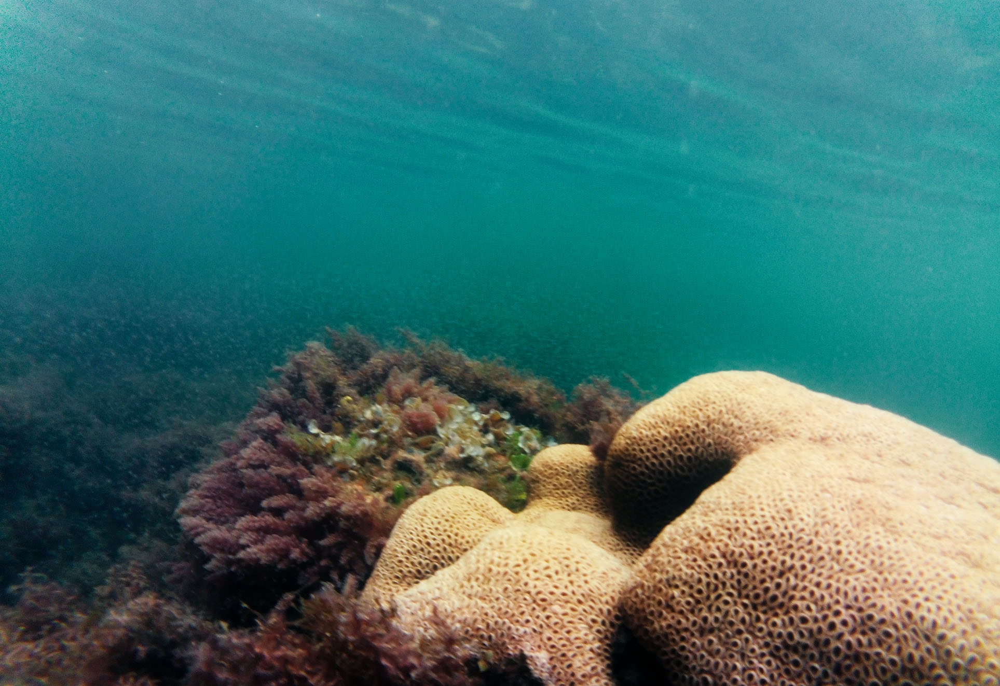
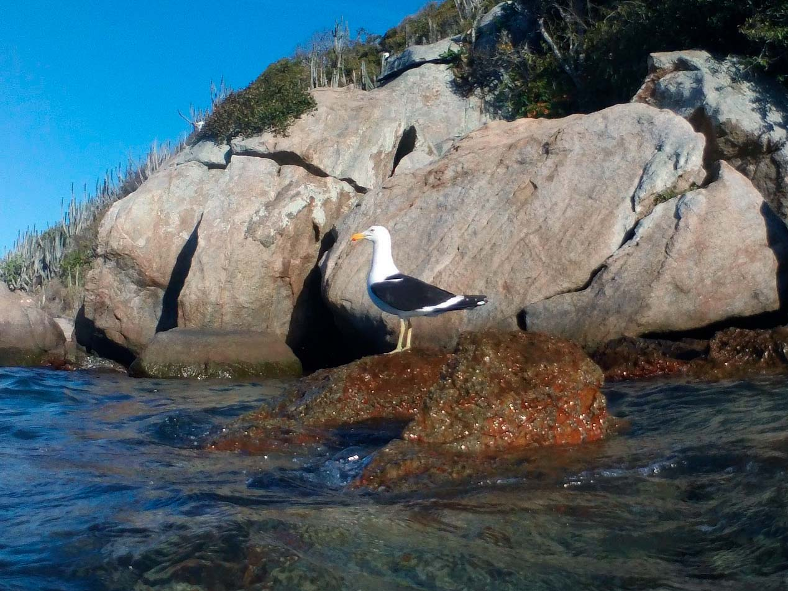
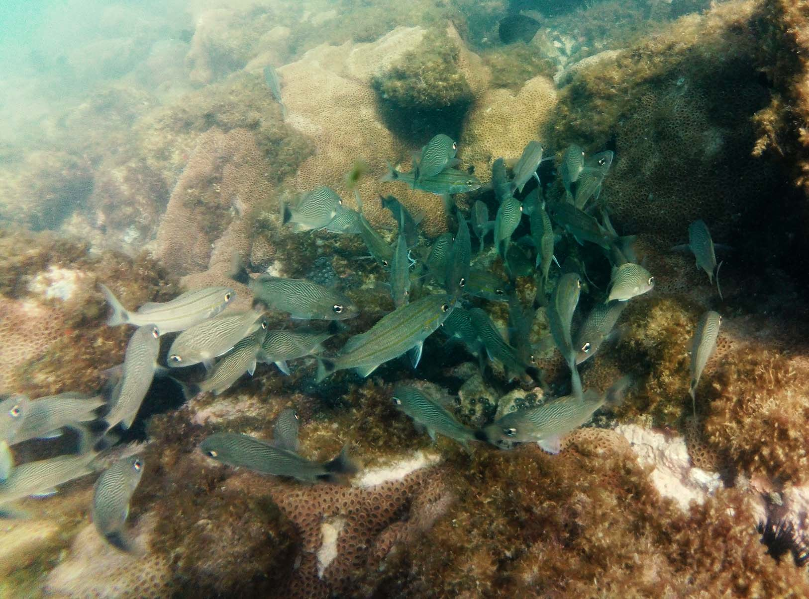
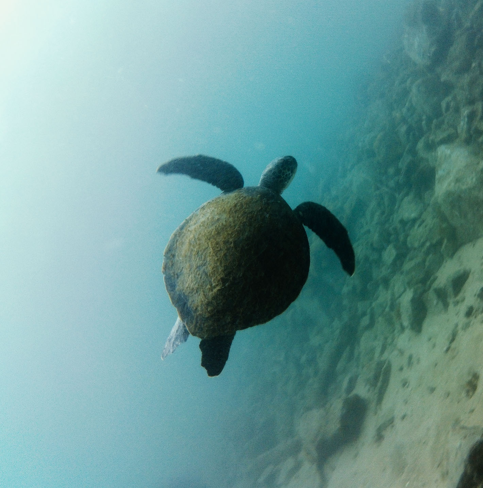
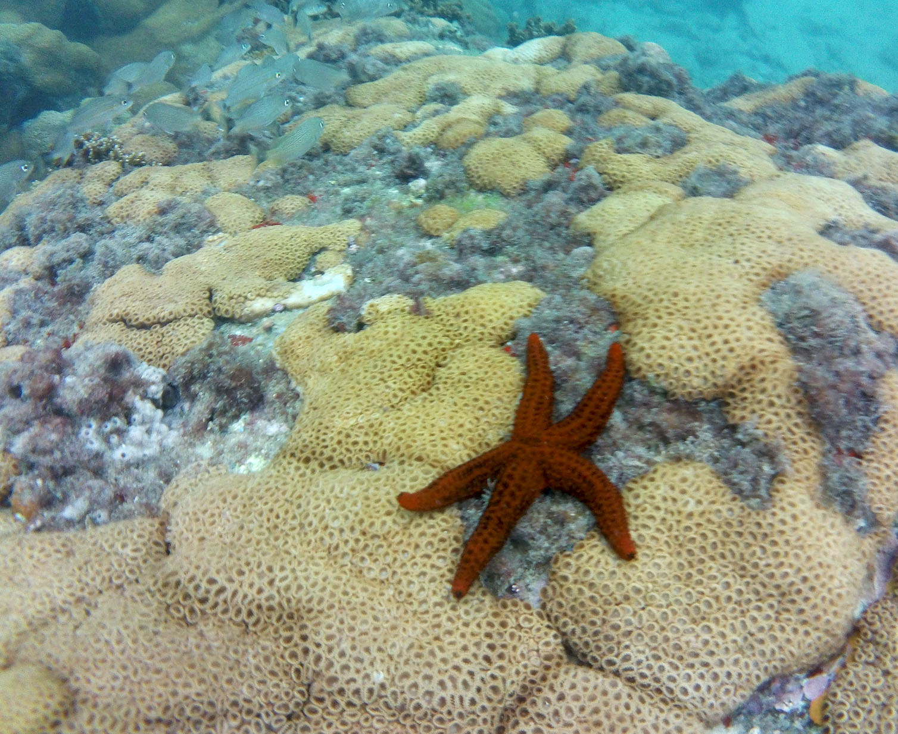
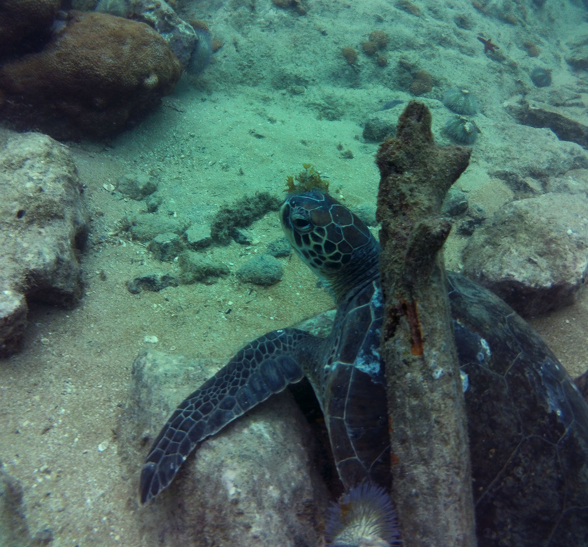
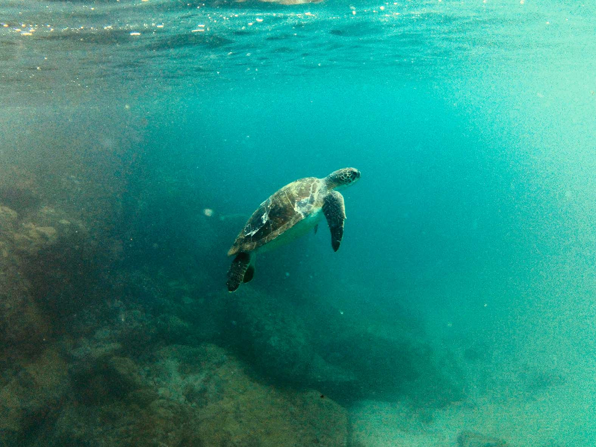
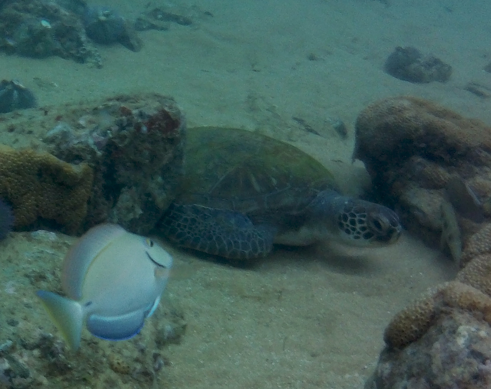

Corais

Gaivota de dorso preto, Praia do Forno

Cardume de peixes corcorca

Tartaruga, Praia da Graçainha

Estrela do mar, Praia da Graçainha

Tartaruga debaixo de galho, Praia da Graçainha

Raia elétrica, Praia da Graçainha

Tartaruga subindo para respirar
